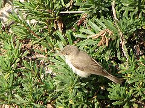
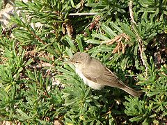

| Eastern Olivaceous Warbler | |
|---|---|
|  | |
| Conservation status | |
| Binomial name | |
| Hippolais pallida (Hemprich & Ehrenberg, 1833) |
| Eastern Olivaceous Warbler | |
|---|---|
|  | |
| Conservation status | |
| Binomial name | |
| Hippolais pallida (Hemprich & Ehrenberg, 1833) |
The Eastern Olivaceous Warbler (Hippolais pallida) is a "warbler", formerly placed in the Old World warblers when these were a paraphyletic wastebin taxon. It is now considered a member of the acrocephaline warbelrs, Acrocephalidae, in the tree warbler genus Hippolais . It was formerly regarded as part of a wider "Olivaceous Warbler" species, but as a result of modern taxonomic developments, this species is now usually considered to be two species:
It is a small passerine bird, found in dry open country, including cultivation, with bushes or some trees. 2-3 eggs are laid in a nest in low in undergrowth or a bush. Like most warblers, Eastern Olivaceous is insectivorous.
It is a medium-sized warbler, more like a very pale Reed Warbler than its relative the Melodious Warbler. The adult has a plain pale brown back and whitish underparts. The bill is strong and pointed and the legs grey. The sexes are identical, as with most warblers, but young birds are more buff on the belly. It has a characteristic downward tail flick.
Eastern Olivaceous Warbler breeds in south east Europe and the Middle East. It is migratory, wintering in sub-Saharan Africa or Arabia. It is a rare vagrant to northern Europe.
Western Olivaceous Warbler differs from this species in being larger and having a browner tinge to the upperparts; it also has a larger bill. Eastern Olivaceous Warbler sometimes has a greenish tinge to its upperparts, and can be very difficult to separate from Sykes's Warbler, Hippolais rama. The song is a fast nasal babbling.

{kind=link}